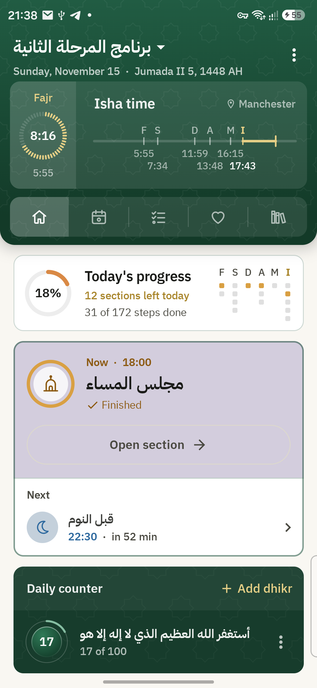
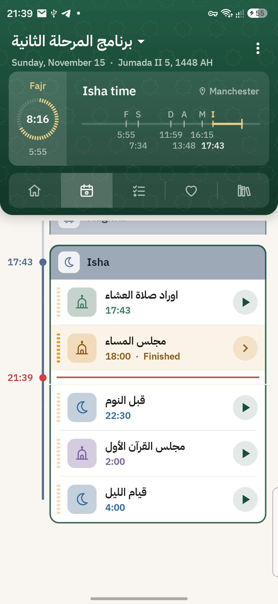
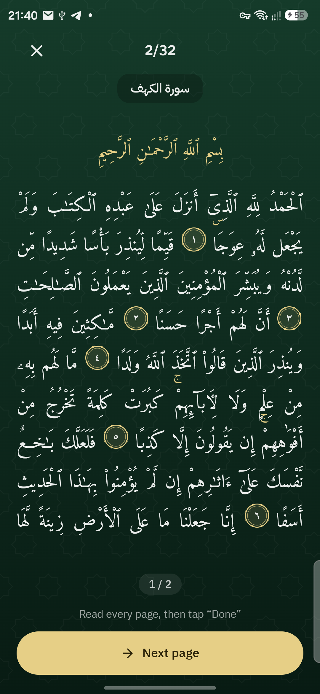
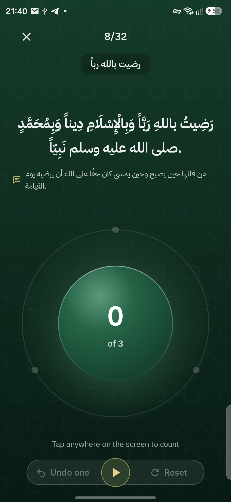
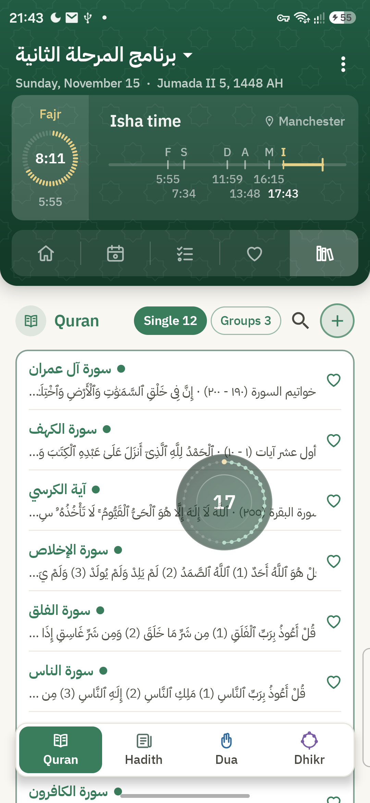
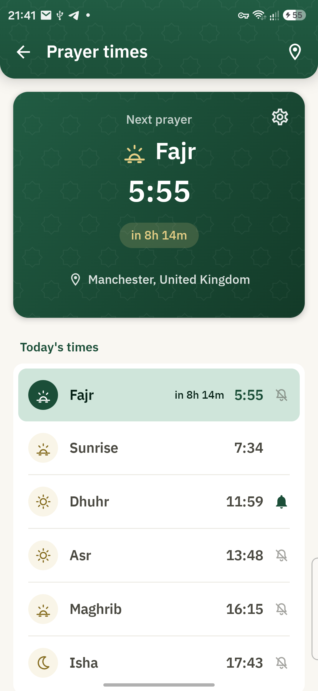

Dhikra · ذكرى
A daily program of dhikr, Quran and du'a, organised around the prayer times.
برنامجك اليومي من الأذكار والقرآن والدعاء، مرتّبًا حول مواقيت الصلاة.
- Android 7.0+
- Arabic & English
- Fully offline
- No ads, no tracking
- Free & open source
Screenshots






Features
- A daily program of sections tied to prayer times or fixed times, with progress and a timeline.
- Step reader with the Quran in page layout and a tap-anywhere counter.
- Floating counter that stays on top of other apps.
- Library of Quran, hadith, du'a and dhikr, with search and favourites.
- Editor to build and reorder your own sections, steps and groups.
- Prayer times calculated on the device for the city you choose, with alerts and home-screen widgets.
- Several programs you can share, export and import.